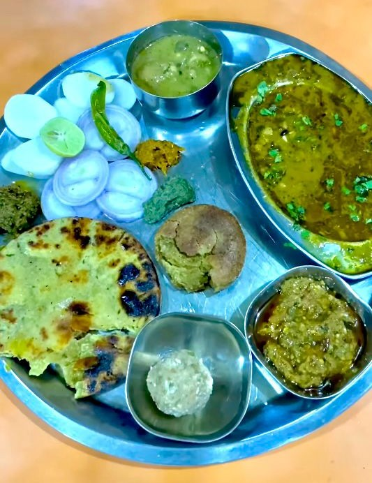

Welcome to BANSAL RESTAURANT
A culinary gem in the heart of Shivpuri 🏡, where tradition meets taste! Established many years ago, we take pride in serving authentic Rajasthani cuisine 🌾 that brings the vibrant flavors of Rajasthan to your plate.
Our signature Daal Bati Churma 🍛 is a delightful blend of earthy lentils, crisp bati, and sweet churma, made using rich-quality grains 🌿 and pure desi ghee 🧈 for an unforgettable experience. Every bite reflects the warmth of home-cooked meals, prepared with passion and tradition.
Whether you're a local food lover 🥰 or a traveler ✈️ seeking authentic flavors, Bansal Restaurant offers a feast that captures the essence of Rajasthan. Come, savor the taste of heritage 🎉, and make every meal a celebration! 🥳
Our Top Dishes
Daal Bati

Dal Bati is a traditional Rajasthani dish consisting of lentils (dal) cooked with aromatic spices and served with bati, which are round, baked wheat flour dumplings. The bati is typically crispy on the outside and soft on the inside, often soaked in ghee for a rich flavor. Served with a side of churma, a sweet dish made from crushed wheat, sugar, and ghee, Dal Bati offers a perfect blend of savory and sweet, making it a hearty and iconic meal of Rajasthan.
Daal Bafle

Dal Bafle is a traditional dish from Madhya Pradesh, similar to Rajasthan's Dal Bati, consisting of spiced lentils (dal) served with bafle, which are wheat flour dough balls boiled and then baked or roasted. Unlike bati, bafle has a softer texture and a distinct aroma from the addition of ghee in the dough. Typically soaked in melted ghee before serving, Dal Bafle is often accompanied by churma, a sweet wheat-based dish, offering a rich and wholesome culinary experience.
Daal Tikkad

Dal Tikkad is a traditional dish of spicy lentils served with tikkad, a thick, rustic flatbread made from wheat and maize flour, offering a hearty and flavorful meal.
Our Resources: A Taste of Tradition, From Farm to Plate
✅ Handpicked Grains from Local Fields 🌾
Our wheat and lentils are sourced directly from local farms, ensuring purity and authenticity in every bite. Each grain is carefully selected to preserve the rich, earthy flavors of traditional Rajasthani cuisine.
✅ Pure Desi Ghee for Rich Flavor 🧈
We use 100% pure desi ghee, prepared using traditional churning methods. This golden elixir enhances the aroma and taste of every dish, making our Dal Bati, Bafla, and Tikkad an indulgent delight.
✅ Authentic Cooking Methods 🍛
Our dishes are cooked using time-honored techniques, including slow roasting and clay oven baking, to retain the rustic flavors and wholesome goodness of Rajasthan’s culinary heritage.
✅ Fresh, Natural Ingredients 🌿
We believe in serving food that’s fresh, natural, and free from preservatives. From hand-ground spices to sun-dried herbs, every ingredient is chosen to bring out the best in our dishes.
🍽 Your Next Meal Awaits – Find Us Here!